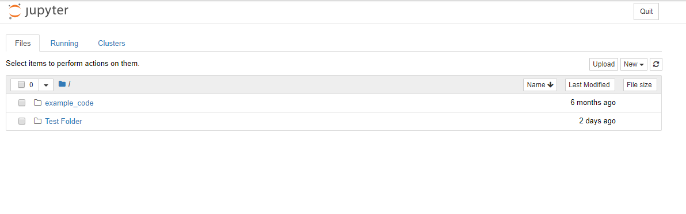
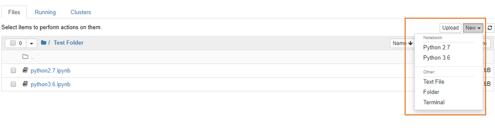
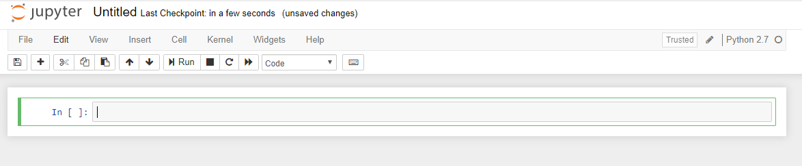
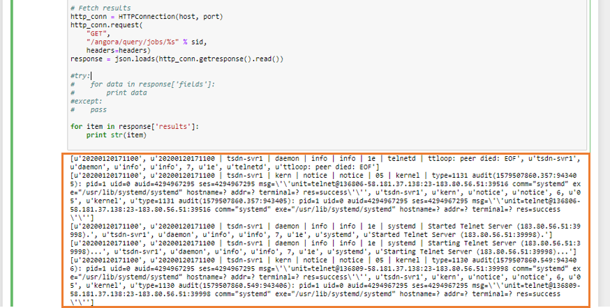

Jupyter¶
개요¶
본 매뉴얼은 IRIS에서 직접 Python 언어를 사용할 수 있는 Jupyter Notebook IDE를 사용하는 방법에 대해 설명합니다.
Jupyter Notebook 접속 방법¶
IRIS 대화형분석 > Jupyter 로 이동하면 아래와 같이 Jupyter Notebook 메인 페이지로 접속할 수 있습니다.
Jupyter Notebook 이용 방법¶
Upload 버튼을 클릭하여 사용자가 원하는 파일을 로컬에서 Jupyter 서버로 복사할 수 있습니다. New 버튼을 클릭하면 새로운 Notebook 파일 및 기타 폴더 등을 생성할 수 있습니다. (IRIS의 Jupyter Notebook은 기본적으로 Python 2.7과 Python3.6 버전을 지원합니다.)
비어있는 코드 블록에 사용자가 원하는 코드를 작성할 수 있습니다.
각 코드 블록을 Run 버튼 또는 Ctrl + Enter 를 눌러 실행시키면 블록 하단에 실행 결과가 도출됩니다.
IRIS-DB에서 데이터를 읽어오기¶
import API.M6 as M6
# connection
conn = M6.Connection("192.168.100.180:5050", "myuser", "mypasswd", Database="myuser")
c = conn.Cursor()
c.SetFieldSep('|^|')
c.SetRecordSep('|^-^|')
# local table create
q = '''
CREATE TABLE LOCAL_TEST_TABLE_007 (
k TEXT,
p TEXT,
a TEXT
)
datascope LOCAL
ramexpire 30
diskexpire 34200
partitionkey k
partitiondate p
partitionrange 10
;
'''
print(c.Execute2(q))
# data insert
print(c.Execute2("INSERT INTO LOCAL_TEST_TABLE_007 (k, p, a) VALUES ('k2', '20110616000000', '1');"))
print(c.Execute2("INSERT INTO LOCAL_TEST_TABLE_007 (k, p, a) VALUES ('k3', '20110616000000', '1.2');"))
print(c.Execute2("INSERT INTO LOCAL_TEST_TABLE_007 (k, p, a) VALUES ('k4', '20110616000000', '0');"))
# data select
q = "select * from LOCAL_TEST_TABLE_007;"
c.Execute2(q)
for row in c:
print(row)
# close
c.Close()
conn.close()